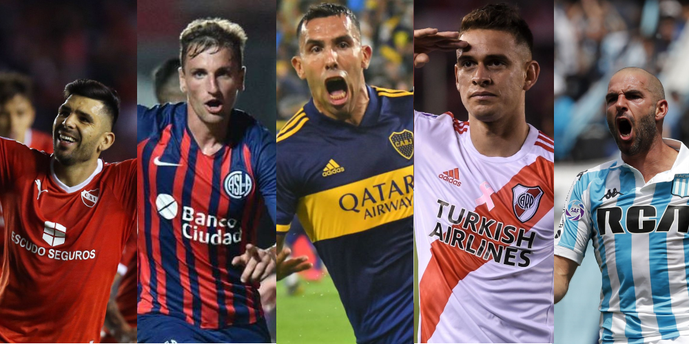
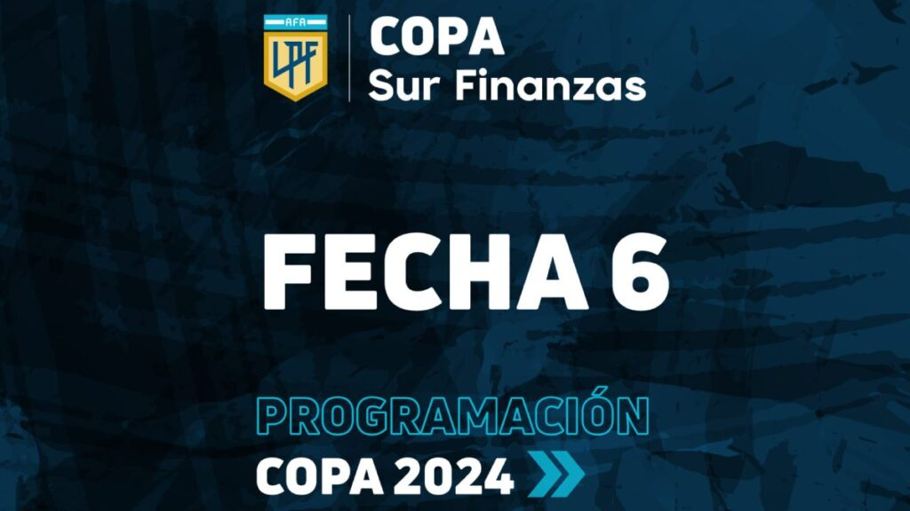
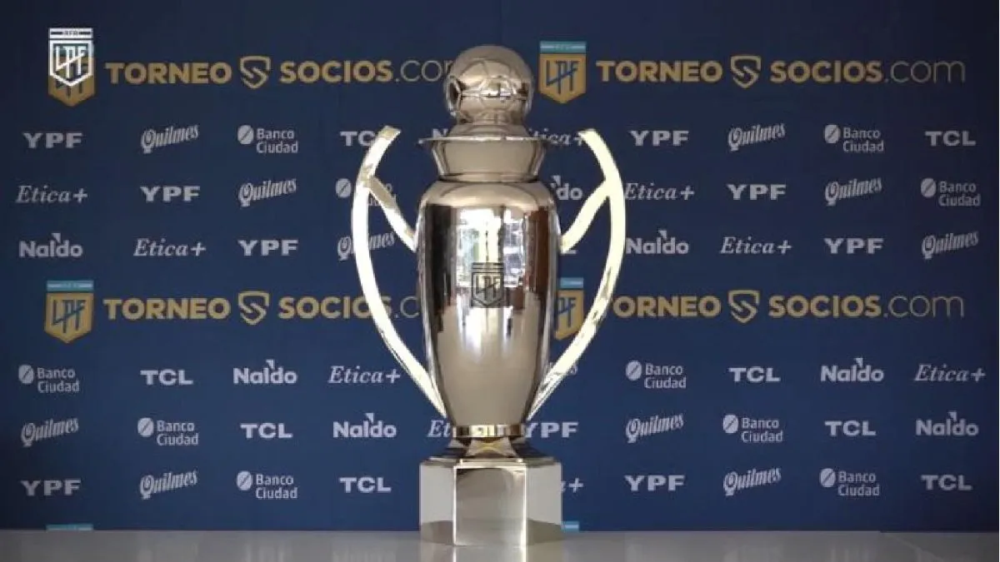
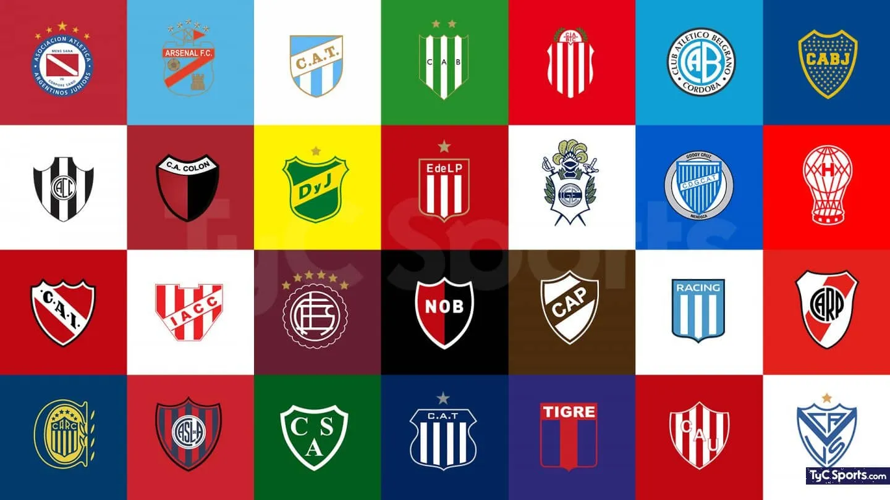

Información General
La Liga Profesional de Fútbol de Argentina es el torneo de la primera categoría del fútbol masculino argentino. Se organiza desde 1893 por la Asociación del Fútbol Argentino. En el campeonato 2023, participaron veintiocho equipos.
¡El fútbol argentino es apasionante y lleno de historia! ⚽🇦🇷

River Plate actual campeon de la liga.
Equipos Participantes
En total, son veintiocho equipos participantes cada año decienden dos.

Resultados de Partidos
| Fecha |
Equipos |
Marcador |
| 18/02/2024 |
River Plate vs. Banfield |
1-1 |
| 17/02/2024 |
Rosario Central vs. Gimnasia |
2-1 |
| 18/02/2024 |
Instituto vs. Independiente |
0-2 |
| 18/02/2024 |
Velez vs. Huracan |
1-0 |
| 19/02/2024 |
Riestra vs. Tucuman |
1-0 |
| 19/02/2024 |
Riestra vs. Tucuman |
1-0 |
| 19/02/2024 |
Barracas Central vs. Talleres |
2-1 |
| 20/02/2024 |
Argentinos Jr vs. Rivadavia |
2-1 |
| 17/02/2024 |
San Lorenzo vs. Tigre |
2-0 |
| 17/02/2024 |
Racing vs. Godoy Cruz |
0-2 |
| 18/02/2024 |
Lanus vs. Boca Juniors |
2-1 |
| 19/02/2024 |
Estudiantes vs. Newells |
2-0 |
| 19/02/2024 |
Belgrano vs. Sarmiento |
4-1 |
| 19/02/2024 |
Union vs. Platense |
0-0 |
| 20/02/2024 |
Def Y Justicia vs. Central Cordoba |
1-1 |
Partidos correspondientes a la fecha N°6 Copa De La Liga 2024

Estadísticas de Equipos
Estadísticas de Godoy Cruz:
- Goles marcados: 8
- Goles recibidos: 0
- Posición en la tabla: 1
Estadísticas de Estudiantes De La Plata:
- Goles marcados: 7
- Goles recibidos: 1
- Posición en la tabla:
Estadísticas de Independiente:
- Goles marcados: 5
- Goles recibidos: 1
- Posición en la tabla: 3
Estadísticas de River Plate :
- Goles marcados:12
- Goles recibidos: 2
- Posición en la tabla: 4
Estadísticas de Lanus:
- Goles marcados: 8
- Goles recibidos: 4
- Posición en la tabla: 5
Estadisticas de los primeros cinco lugares en la tabla general, datos hasta la fecha 6.

Equipo Más Ganador
El equipo más ganador es River Plate con 38 títulos nacionales.
En la historia del fútbol argentino, River Plate se destaca como el club más laureado, con un total de 38 títulos nacionales. Su dominio abarca desde el Campeonato de 1920, su primer título en la era amateur, hasta el reciente Torneo de la Liga Profesional 2023. Siguiendo muy de cerca al Millonario, encontramos a Boca Juniors, el otro gigante del fútbol argentino, con 35 títulos en su haber.

Historia
La era profesional surgió de la fusión, en 1934, de la Asociación Argentina de Football (Amateurs y Profesionales) con la Liga Argentina de Football. Esta última, disidente de la FIFA, venía organizando campeonatos profesionales desde 1931.
